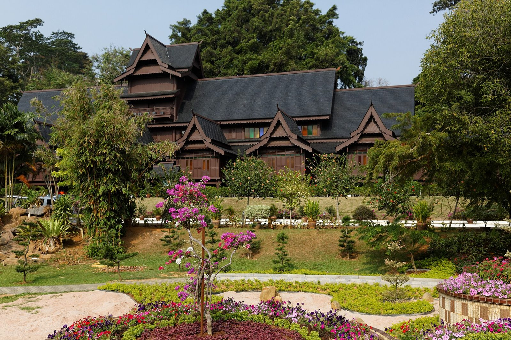
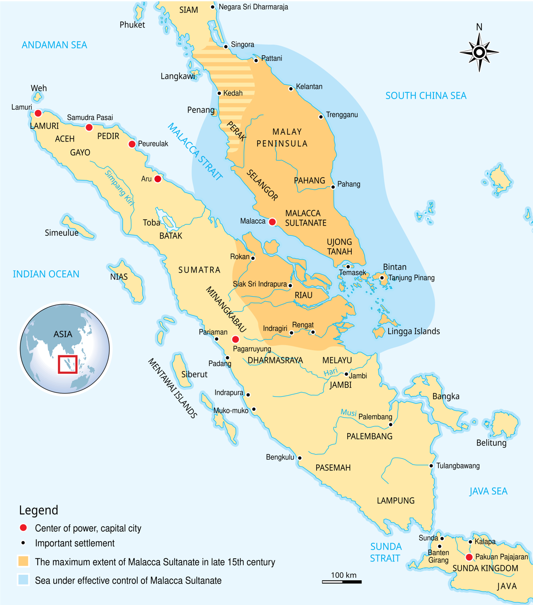
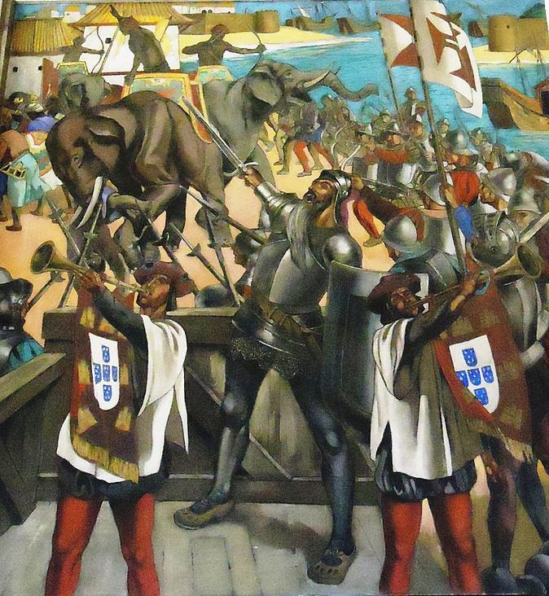
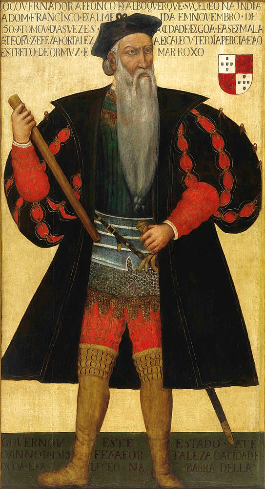
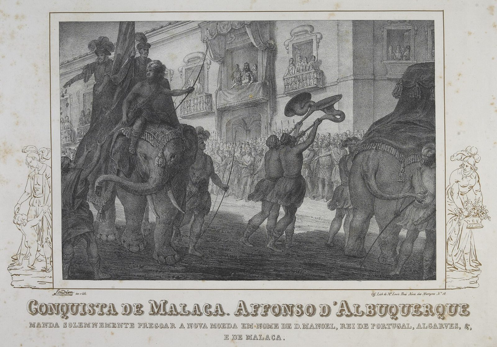
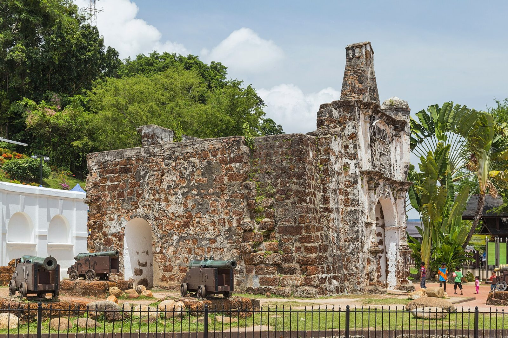
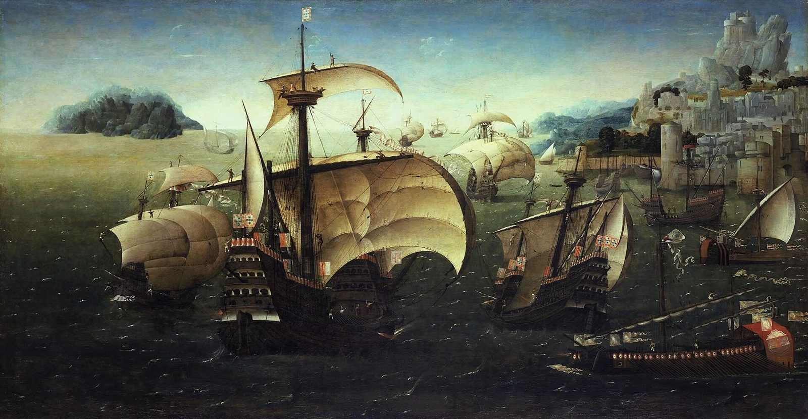

Background: The Jewel of the Straits
By the early sixteenth century the Sultanate of Melaka, founded around 1400 by Parameswara, had become the richest entrepôt in Southeast Asia. Its harbour sat at the narrowest point of the Strait of Melaka, where the monsoon winds of the Indian Ocean met those of the South China Sea. Merchants from Gujarat, Bengal, Arabia, China, Java and the Spice Islands traded cloves, nutmeg, pepper, silk, porcelain and textiles under the protection of the Sultan.


Portugal, having rounded the Cape of Good Hope in 1498, was determined to seize control of the spice trade from the Muslim merchants who dominated it. The viceroy Afonso de Albuquerque believed that whoever held Melaka had his hand on the throat of Venice.
Whoever is lord of Malacca has his hand on the throat of Venice. — Tomé Pires, Suma Oriental, c. 1512–1515
In 1509 a Portuguese fleet under Diogo Lopes de Sequeira arrived to open trade. Suspicious of the newcomers and pressured by the Gujarati and Javanese merchant communities, Sultan Mahmud Shah's court turned on them: several Portuguese were killed and around twenty taken prisoner. Sequeira escaped, and Albuquerque now had his pretext for war.
The Opposing Forces
Albuquerque sailed from Cochin in April 1511 with a modest fleet, gathering more ships along the way. On paper the Sultanate's defenders vastly outnumbered the invaders, but the Portuguese brought something new to the Straits: heavy ship-borne artillery, steel armour, and disciplined infantry drilled in European siege warfare.


Portuguese Empire
- Approx. 1,200 men — c. 800 Portuguese and 400–600 Malabar auxiliaries
- 17–18 ships, including large carracks (naus) and galleys
- Heavy bronze cannon, arquebuses, crossbows, plate armour
- Led by Afonso de Albuquerque
Sultanate of Melaka
- Reported 20,000–30,000 fighting men, many conscripted townsmen
- Around 20 war elephants
- Thousands of smaller cannon, though lighter than Portuguese guns
- Led by Sultan Mahmud Shah and his son Sultan Ahmad Shah
- Javanese mercenaries under Utimutiraja; Gujarati merchant support
The city itself was Melaka's weakness. It had no stone walls; its defences were palisades and barricades thrown up at the key crossing — the bridge over the Melaka River that linked the royal quarter on the hill to the merchants' district of Upeh on the north bank.
The Battle, July – August 1511
The campaign lasted roughly six weeks, from the fleet's arrival to the final collapse of resistance. The decisive struggle centred on control of the bridge.

The Portuguese fleet anchors off Melaka, firing salvoes to announce its arrival. Albuquerque demands the release of the prisoners taken in 1509 and permission to build a fortress. The Sultan stalls.
Negotiations break down. Albuquerque bombards the shoreline and burns houses and ships along the waterfront to pressure the Sultan. The prisoners are eventually released, but the fortress demand is refused.
First assault. Portuguese troops land on both sides of the river and storm the bridge. They take it after heavy fighting against war elephants and massed defenders, but exhausted and under fire from hidden positions, they withdraw to the ships by evening.
Albuquerque prepares a second attack. A tall junk is fortified and floated upriver to serve as a protected platform beside the bridge, allowing troops to hold the position once seized.
Second assault. The Portuguese retake the bridge and this time hold it, fortifying it with barrels and timber. Over the following days they fight street by street, supported by cannon fire, while the Sultan's forces counter-attack repeatedly.
Resistance collapses. Sultan Mahmud Shah and his court abandon the city and flee inland to Pagoh and later Bentan. Albuquerque permits his men to loot the city for a day; the royal treasury and vast quantities of goods are seized.
The Portuguese came and fired their cannon… the Malays were astonished and said: what is this round thing that comes and kills? — Paraphrased from the Sejarah Melayu (Malay Annals)
Aftermath
Albuquerque moved quickly to secure his prize. Using stone from the royal mausoleums and mosques, his men built the fortress of A Famosa on the hill overlooking the river mouth. Its surviving gate, the Porta de Santiago, still stands in Melaka today.

The Portuguese struck new coinage, appointed a bendahara and officials from the local merchant communities to keep trade flowing, and sent envoys to Siam, Pegu and the Spice Islands. In 1512 the first Portuguese expedition reached the Banda Islands and the Moluccas, the source of the cloves and nutmeg that had drawn them east.
Sultan Mahmud Shah did not accept defeat. From exile he launched repeated attacks on the city through the 1510s and 1520s, while his descendants established the successor sultanates of Johor and Perak. Melaka itself remained under Portuguese rule for 130 years, until the Dutch captured it in 1641.
Legacy
The fall of Melaka was a turning point in world history. It marked the first permanent European conquest in Southeast Asia and announced an era in which sea power and gunpowder, rather than control of land and people, would decide the fate of kingdoms across the region.
Yet the Portuguese victory was incomplete. Muslim traders redirected their commerce to Aceh, Johor, Brunei and Banten, and the Straits became a contested zone rather than a Portuguese monopoly. Melaka's cosmopolitan character survived: the Kristang (Portuguese-Eurasian) community, Peranakan Chinese, Chitty Indians and Malay populations still shape the city today.

In Malaysia the battle is remembered as a moment of loss and resilience — the end of the "golden age" of the Melaka Sultanate celebrated in the Sejarah Melayu, but also the origin of the Johor and Perak royal houses that endure to this day. In 2008 the historic centre of Melaka was inscribed as a UNESCO World Heritage Site, with the ruins of A Famosa among its most visited landmarks.
Malacca is a city that was made for merchandise, fitter than any other in the world. — Tomé Pires, Suma Oriental